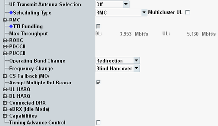
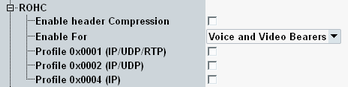
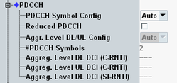
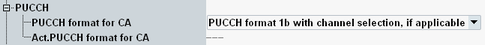
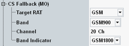
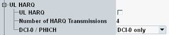
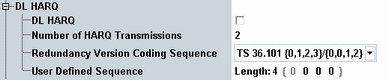
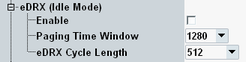
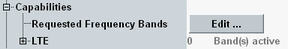
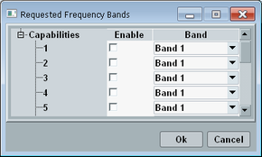

This section describes the following "Connection" settings.

Configures the parameter "ue-TransmitAntennaSelection" signaled to the UE, see 3GPP TS 36.213, section 8.7 "UE Transmit Antenna Selection".
You can disable UE antenna selection or allow open loop antenna selection. Closed loop antenna selection is not supported. For MIMO scenarios and for multi-cluster allocation, antenna selection is not allowed.
If you allow open loop antenna selection, the UE can change the used transmit antenna between TTIs. Connect the possible UE transmit antennas to the configured RF input connector via a combiner.
Remote command:Selects the channel type to be scheduled for the UE.
For carrier aggregation scenarios, you can configure this setting per component carrier.
"RMC" | The instrument allocates a 3GPP-compliant reference measurement channel. For configuration, see "RMC Settings (No eMTC)" and subsequent section. |
"User-defined Channels" | 3GPP-compliant RMCs allow only specific combinations of cell bandwidth, number of allocated RBs, RB position and modulation type. User-defined channels provide more flexibility concerning the allowed combinations. For configuration, see "User-Defined Channels (No LAA, no eMTC)" and subsequent sections. Option R&S CMW-KS510 is required. |
"User-defined TTI-Based" | Like "User-defined Channels", but settings can be configured individually per TTI (subframe). For configuration, see "TTI-Based Channel Configuration". Option R&S CMW-KS510 is required. |
"Fixed CQI" | Provides a downlink signal with CQI index and RB allocation configurable individually per TTI. The uplink signal is the same as for "User-defined TTI-Based". For configuration, see "TTI-Based Channel Configuration". Option R&S CMW-KS510 is required. |
"Follow ..." | The "Follow..." scheduling types provide a downlink signal configured according to the values reported by the UE. The scheduling types are available depending on the transmission mode:
The uplink signal is the same as for "User-defined TTI-Based". For configuration, see "TTI-Based Channel Configuration". Selecting these scheduling types also enables CQI reporting. The "Follow..." scheduling types can only work correctly, if the UE sends the corresponding reports. For carrier aggregation, configure the CQI reporting settings, so that reports for the individual carriers arrive in different subframes. Otherwise, the "follow" mechanism does not work. See also "CQI Reporting". Option R&S CMW-KS510/-KS512 is required (without CA/with CA). |
"SPS" | Semi-persistent scheduling (PCC only). A configured RB allocation is granted to the UE every nth subframe. Selecting this value disables HARQ and UL dynamic scheduling for connected DRX. For configuration, see "SPS Configuration". Option R&S CMW-KS510 is required. |
"eMTC Auto Mode" | Automatic consideration of repetitions, hopping, and so on, for comfortable eMTC scheduling configuration. To enable eMTC, see "eMTC". For configuration of the auto mode, see "eMTC Auto Mode Settings". |
"eMTC Compact Scheduling" | Like "User-defined Channels", but with more compact scheduling in the time-domain, for maximum eMTC throughput. To enable eMTC, see "eMTC". For configuration of the scheduling, see "eMTC Compact Scheduling Settings". |
Enables multi-cluster allocation (resource allocation type 1) for RMC or user-defined channels. With disabled checkbox, contiguous allocation is used (resource allocation type 0).
Option R&S CMW-KS510/-KS512 is required (without CA/with CA).
Remote command:This setting is displayed for MIMO 4x4 with spatial multiplexing, TM 3 and TM 4.
You can select between two layers and four layers.
Remote command:Configures the parameter "twoIntervalsConfig", signaled to the UE for scheduling type SPS in TDD mode. The parameter is specified in 3GPP TS 36.321.
Remote command:Enables or disables TTI bundling for the uplink.
With TTI bundling, the UE sends the same data with different redundancy versions in four subsequent TTIs. TTI bundling is faster than HARQ. So TTI bundling makes sense if the channel quality is bad and the application is delay-sensitive, for example voice over LTE.
- FDD:
– User-defined scheduling (global, not TTI-based) or SPS - TDD:
– User-defined scheduling (global, not TTI-based) – UL/DL configuration = 0, 1 or 6 - UL RB configuration:
– Number of RB ≤ 3 – Modulation type QPSK - No UL carrier aggregation
Option R&S CMW-KS510 is required.
Remote command:Displays the expected maximum throughput in Mbit/s (averaged over one frame). For the downlink, the value refers to the sum of all streams of a component carrier.
Remote command:
This node configures robust header compression (ROHC).
Header compression is relevant for the continuous transfer of small packets, for example for voice over LTE. Here, the uncompressed header is typically bigger than the payload. Header compression reduces the radio resources required for a voice call.
ROHC is specified in 3GPP TS 36.323 and the references stated therein.
Option R&S CMW-KS510 is required.
Enables or disables ROHC.
Remote command:Selects for which types of dedicated bearers ROHC is enabled.
"Voice and Video Bearers" | Dedicated bearers with the profile "Voice" or "Video". |
"All Dedicated Bearers" | All dedicated bearers, including voice, video and data connections. |
Enables up to two header compression profiles. If more than one enabled profile is compatible to the used protocols, the most specific profile is used. If no profile is compatible, no compression is performed.
- IP/UDP/RTP traffic: profile 2 used
- IP/TDP/... traffic: profile 4 used

This node configures the used PDCCH configuration. For carrier aggregation scenarios, the settings can be configured per component carrier.
Configures and displays the number of OFDM symbols used for the PDCCH per normal subframe.
- 1.4 MHz: four symbols
- 3 MHz and 5 MHz: two or three symbols
- 10 MHz, 15 MHz and 20 MHz: one, two, three symbols or "Auto"
"Auto" configures two or three symbols, depending on the scheduling type.
With enabled "Reduced PDCCH", the lowest allowed value is set automatically.
"#PDCCH Symbols" displays the number of OFDM symbols resulting from the settings.
Remote command:There are three aggregation levels, for different types of DCI messages: DCI messages for DL with C-RNTI, for UL with C-RNTI and for DL with SI-RNTI. The aggregation levels are displayed as numbers of control channel elements (CCE), see 3GPP TS 36.211, section 6.8.1.
"Aggr. Level DL/UL Config" configures the C-RNTI aggregation levels. Value <a>/<b> means <a> CCE for DL and <b> CCE for UL. Which values are possible, depends also on the scheduling settings. If the selected value is not possible, a lower value is used automatically.
"Auto" configures the aggregation levels automatically, depending on the scheduling settings.
The "Aggreg. Level..." parameters display the used aggregation levels, resulting from the settings.
- "Auto": always possible
- "1/1": cell BW 1.4 MHz
- "4/2": cell BW 1.4 MHz or 3 MHz
- "4/4": cell BW 3 MHz or 5 MHz
- "8/4": cell BW 5 MHz
- "8/8": cell BW 10 MHz or 20 MHz, normal CP, frame structure not type 2, 1 or 3 PDCCH symbols
Enable "Reduced PDCCH" to reduce the resources used for the PDCCH and to increase the resources available for the PDSCH. Thus you can influence the used coding rates and the PDSCH data rate.
This setting is a comfort function. You can achieve the same effect by setting low values for "PDCCH Symbol Config".
Remote command:
This node selects the PUCCH format used for carrier aggregation scenarios. Without CA, the format is not configurable but selected depending on the transported message type, as defined by 3GPP.
- "PUCCH format 1b with channel selection, if applicable"
Format 1b is used if allowed by 3GPP. There are situations, where PUCCH format 3 is mandatory, for example for CA with more than two carriers. - "PUCCH format 3"
Format 3 is always used.
The used PUCCH format is displayed for information ("Act. PUCCH format for CA").
PUCCH format 3 needs more space and can transport more ACK/NACKs than format 1b.
Remote command:Select the mechanism to be used for inter-band handover and inter-frequency handover within the LTE signaling application.
Either blind handover or redirection can be used, see "Handover".
The selected mechanism is also relevant for a swap of SCC and PCC settings during an established connection. If the cell bandwidth is changed by the swap, redirection is used. If the cell bandwidth is not changed but the band is changed, the setting "Operating Band Change" is used. If also the band is not changed but the frequency is changed, the setting "Frequency Change" is used.
Remote command:The following settings configure the feature circuit-switched fallback (CSFB) for mobile-originating calls.

A fallback for a mobile-originating voice call can be performed to a WCDMA cell, a GSM cell or a TD-SCDMA cell. If you select "None", requests for CS fallback are rejected.
Select the technology, specify the target band and the channel. For GSM, you can also set the band indicator for distinction of GSM 1800 and GSM 1900 bands.
Remote command:- Disabled: Only the first default bearer request of a UE is accepted. Additional requests are rejected.
- Enabled: If the UE sends several default bearer requests, several bearers are established. For each bearer, a different IP address is assigned to the UE.
During the establishment of additional default bearers, do not modify any settings. So do not change parameters when the UE sends a default bearer request, until the event log indicates that the requested bearer has been established.
Remote command:The following parameters configure the HARQ procedure for uplink transmissions.
Option R&S CMW-KS510 is required. For eMTC, UL HARQ is disabled and the node is hidden.

Enables or disables HARQ for uplink transmissions.
HARQ is disabled for TTI bundling and multi-cluster allocation. For the scheduling type SPS, HARQ is disabled and the node is hidden.
Remote command:Specifies the maximum number of uplink transmissions, including initial transmissions and retransmissions.
For TTI bundling, only the value 4 is supported.
Remote command:Selects how the UE is informed about required retransmissions / successful UL transmissions.
"DCI-0 only" | Retransmission is requested via the PDCCH, transporting a DCI 0 and a new data indicator (NDI) bit that is not toggled relative to the previous transmission. |
"PHICH only" | Retransmission is requested via the physical hybrid-ARQ indicator channel (PHICH), transporting a NACK. |
"DCI-0 & PHICH" | Combination of both methods. |
For the scheduling type SPS, this parameter is available instead of the node "UL HARQ". The value is signaled to the UE. UL HARQ is disabled.
For TTI bundling, only the value 4 is supported.
Option R&S CMW-KS510 is required.
Remote command:The following parameters configure the HARQ procedure for downlink transmissions.
For scenarios without carrier aggregation, option R&S CMW-KS510 is required. For scenarios with carrier aggregation, R&S CMW-KS512 is required.

Enables or disables HARQ for downlink transmissions.
HARQ is disabled for scheduling type SPS.
Remote command:Specifies the maximum number of downlink transmissions, including initial transmissions and retransmissions.
Remote command:The coding sequence defines the redundancy versions for repeated transmissions of a packet. The first value of the sequence is used for initial transmissions, the second value for the first retransmission, and so on.
If the sequence is shorter than the maximum allowed number of transmissions, it is used several times. Example: Four transmissions allowed and configured sequence {0, 2} results in the used sequence {0, 2, 0, 2}.
If the sequence is longer than the maximum allowed number of transmissions, the surplus values have no effect. Example: Two transmissions allowed and configured sequence {0, 1, 2, 3} results in the used sequence {0, 1}.
- TS 36.101: Depending on the modulation scheme, either the sequence {0, 1, 2, 3} or {0, 0, 1, 2} is used, as defined in 3GPP TS 36.101.
- TS 36.104: The sequence {0, 2, 3, 1} is used, as defined in 3GPP TS 36.104.
- User-Defined: The user-defined sequence is used. Define first the length of the sequence, then the sequence itself.
For details about the meaning of the individual redundancy versions, see "redundancy version number" in 3GPP TS 36.212.
Remote command:
This node configures extended discontinuous reception (eDRX). eDRX has been specified for IoT devices for power saving.
For established connections, eDRX increases the maximum allowed duration of a long DRX cycle, see "Long DRX Cycle".
For the idle mode, eDRX introduces discontinuous reception. The UE is informed about the eDRX cycle length and the paging time window size. Each eDRX cycle includes one paging time window during which the UE monitors the PDCCH for paging messages. The remaining time of the cycle, the UE does not monitor the PDCCH.
Option R&S CMW-KS590 is required.
Enables or disables eDRX.
Remote command:Duration of one paging time window in idle mode, in subframes.
Remote command:Duration of one extended DRX cycle in idle mode, in radio frames.
Remote command:
This node configures the information element "requestedFrequencyBands" of the "ueCapabilityEnquiry" message. The element contains a list of LTE operating bands for which the UE is requested to report its capabilities.
To configure the list of bands, press the "Edit" button.

You can enable up to 16 entries with different bands. The element "requestedFrequencyBands" is filled with all enabled entries.
Remote command:Enables the correction of a changing UL frame timing via timing advance commands, sent to the UE.
A drift of the UL frame timing can cause a call drop after some time. Enabling timing advance control corrects such a drift via correction commands sent to the UE.
Remote command: